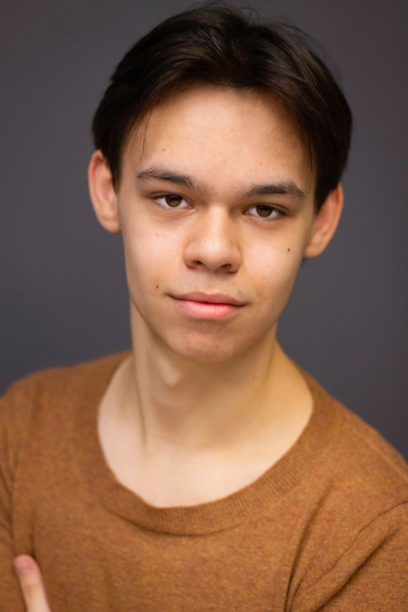

| Dear Evan Hansen | Jared | Forestburgh Playhouse, dir. Roque Berlanga |
| Hairspray | IQ | Forestburgh Playhouse, dir. Lauren Gillis |
| The Wizard of Oz | Wizard of Oz | Forestburgh Playhouse, dir. Franklin Trapp |
| The Bridges of Madison County | Ensemble | Forestburgh Playhouse, dir. Robin Levine |
| Steel Pier* | Male Swing | Point Park University, dir. Tomé Cousin |
| Boo’s Halloween House Party | Principal Swing | Pittsburgh Playhouse, dir. Ahmad Simmons |
| A Chorus Line | Paul San Marco | OFC Creations, dir. Hunter Ekberg |
| Spring Awakening | Moritz Stiefel | OFC Creations, dir. Hunter Ekberg |
* Original Broadway choreography
| Girls Just Want to Have Fun! | DTV Dancer (u/s Jeff) | Lively McCabe Entertainment, dir. Jennifer Werner |
| Broadway Sessions | Vocalist | Green Room 42, dir. Ben Cameron |
| Sing It Forward | Vocalist | 54 Below |
| Aca-Scuse Me! | Vocalist | 54 Below |
Jump split, Russian leap, intermediate tap, basketball handling, piano (5 years), viola (7 years)